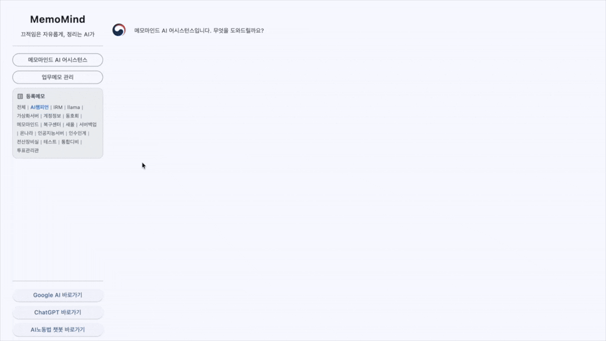

Pain Point
인수인계서 한 장만 전달받고 기피 업무에 배치되어 전임자의 기안문을 독학하는 3년 미만 저연차 공무원
합격의 기쁨도 잠시, 인사이동이나 면직으로 발생한 업무 공백을 떠안고 당장 쏟아지는 악성 민원과 행정업무를 충분한 준비 없이 혼자 감당해야 하는 사람.
2026 MemoMind Outcome Report
업무별 메모를 등록하고 자연어로 질문하면, RAG 기반 답변부터 JSON 파일 내보내기까지 지원하는 AI 인수인계 솔루션
체계적인 인수인계 없이 업무에 투입되고, 질문할 곳조차 없어 고립되는 저연차 공무원의 현실
합격의 기쁨도 잠시, 인사이동이나 면직으로 발생한 업무 공백을 떠안고 당장 쏟아지는 악성 민원과 행정업무를 충분한 준비 없이 혼자 감당해야 하는 사람.
저연차 공무원의 업무 공백과 인수인계 단절을 지방정부 AX 전환의 우선 과제로 정의하고,
AI를 활용해 업무지식을 구조화·검색·활용할 수 있는 서비스의 현장 적용 가능성과 실효성을 검증
AI 챔피언 수업 중 "신성진 교수님" 강의 메모를 기반으로, RAG 검색형 답변이 생성되는 과정의 구동 영상입니다.
업무 메모를 등록·수정하고, 필요한 메모를 추출하여 후임자에게 전달하는 기본 사용 방법입니다.
프로젝트별 업무 내용을 등록하고, 저장된 메모를 최신 내용으로 수정합니다.

전체 또는 필요한 단위 메모만 추출하고, 전달받은 메모를 등록합니다.

데이터베이스(DB) 대신 개인 PC에 가벼운 JSON 파일 형태로 메모를 저장하여 보안과 독립성을 보장합니다. 온디바이스에 최적화된 Gemma4 E2B 초경량 모델 설계, 인프라(NVIDIA T4 GPU 16G 4대, 총 64G) 증설만으로 RAG형 에이전트(Agent) 서비스 구축, 인수인계에 대한 구조적 문제를 AX(인공지능 전환)로 혁신하였습니다.
대규모 예산을 투입하여 고가의 새 서버를 도입하지 않더라도, 보유 서버 재정비하는 것만으로 AX 전환이 가능함을 증명했습니다. 기존 HP 서버에 단 8백만 원 수준의 저전력 T4 GPU 자원을 증설 및 최적화하여, 하드웨어 하향 평준화 환경에서도 중단 없는 고품질 RAG형 에이전트 서비스를 성공적으로 실증하였습니다.
문서 요약·민원 분류 등 경량 업무와 영상·음성 분석 등 고연산 업무를 명확히 구분함.
방향: 업무량·동시 사용자·모델 기준의 설계로 GPU 과잉 투자 방지부서별 개별 도입으로 인한 중복 투자를 막고 피크 시간대 병목 현상을 해소함.
방향: 유휴 GPU 최소화를 위해 새벽 시간 배치처리 등 적용자체 GPU 인프라를 API 형태로 개방하여, 직원이 개인 업무에 AI를 손쉽게 접목하도록 지원
방향: 범기관 API 허브 제공으로 부서별 개별 구축을 방지하고 상향식(Bottom-up) AX 문화 조성구현 여부를 넘어 실제 업무지식이 구조화되고, 필요한 정보를 찾고, 후임자에게 전달될 수 있는지를 단계별로 검증
AI 서버 구성부터 애플리케이션 실행, 실제 업무 데이터 확인까지 서비스를 완벽히 재현함.
로컬 PC 내 llama.cpp 기반의 독립적 AI 실행 환경과 Gemma4 GGUF 모델 로딩을 완벽히 재현함.
검증: 명령어 구동을 통한 AI 질의응답 서버 활성화 완료 [확인]Python 가상환경 내에서 주요 모듈(flet, httpx, tinydb)의 의존성 및 UI 화면 실행을 검증함.
검증: 패키지 가동 및 메모 등록·자연어 검색 기능 정상 작동 [확인]AI 답변의 기반이 되는 실제 파일 데이터와 후임자에게 전달할 JSON 추출 산출물 구조를 확인함.
검증: 실제 실무 데이터 96건 및 17개 업무유형 셋업 완료 [실제 파일]자체 GPU 인프라를 안정적으로 제어하고, 사용자가 체감할 수 있는 직관적인 편의성을 구축함.
외부 인력 및 서버 의존 없이 로컬 GPU 자원을 실시간으로 관리하고 최적화함.
대응: GPU 구동 실행파일 패키징, 원클릭 서버 시작 및 실시간 자원 상태점검 툴 제공서버가 고도화되어도 사용자가 검색 및 분류 결과를 쉽게 납득하고 제어할 수 있어야 함.
대응: AI 추출 근거/건수 명시, 직관적인 카테고리 수동 전환 인터페이스 배치폐쇄형 GPU 운영의 보안 이점을 살리면서 데이터의 최신성과 정합성을 유지함.
대응: 정보 만료일·출처 자동 표시, 유저 편의를 돕는 자동 백업 및 업무별 저장 기준 적용초기 체감 중심의 성공 사례를 바탕으로 주도적인 AI 활용 문화를 전사적으로 확산함.
범용적인 예시보다 실무자가 당장 처리해야 할 데이터로 AI의 효용성을 직접 체감하게 유도하여 자발적인 참여 문화를 형성함.
기술적 복잡성을 화면 뒤로 숨기고 원클릭 실행 환경을 제공하여, 디지털 취약 계층을 포함한 전 직원이 부담 없이 다가오는 환경을 구축함.
잦은 순환근무 속에서 전임자를 붙잡고 묻거나 후임자에게 매번 다시 설명하던 기존의 비효율적 관행을 완전히 끊어냈습니다.
후임자가 전임자의 과거 기록을 통해 혼자서 업무 맥락을 파악하고 비효율적인 질문 횟수를 줄였는지 입증하는데 있습니다.